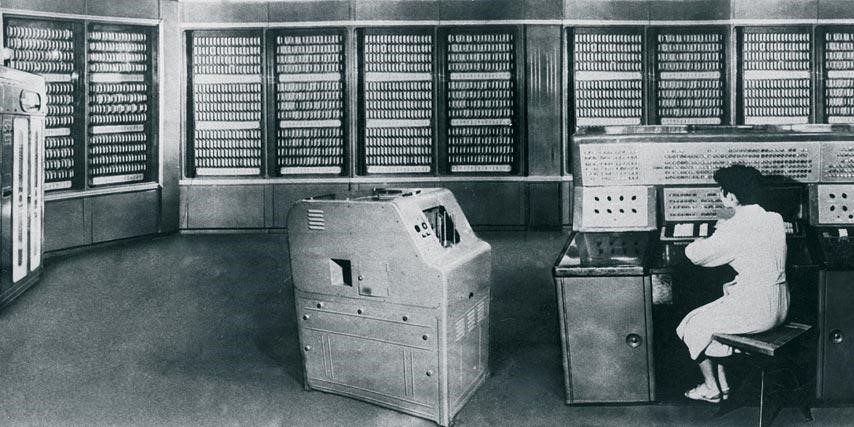

первые электоронные вычистлительные машины появились в середине XX века.
Тег span используется для выделения части текста внутри строки.
ЭВМ - это электронная вычислительная машина.
Важно: первые ЭВМ занимали целые помещения.
Курсивный текст и логически выделенный текст
Устаревшая информация
Подчеркнуктый текст
Формула воды: H2O
Степень числа: 23 =8
Мелкий текст для примечаний
Выделенный важный фрагмент
Первая строка
Вторая строка
<h1>История ЭВМ<h1>
Описание поколений электронных вычислительных машин.

"Электро́нная вычисли́тельная маши́на (ЭВМ) — комплекс технических, аппаратных и программных средств, предназначенных для автоматической обработки информации, вычислений, автоматического управления."Источник: Википедия
По словам ученых:
развитие вычисли́тельной техники имзенило ход истории